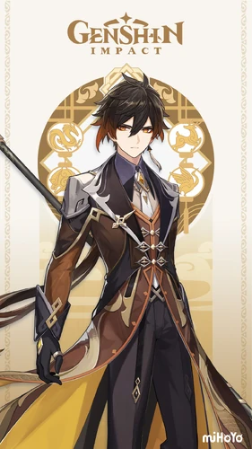
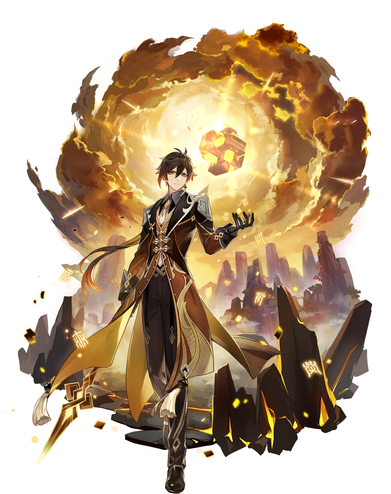
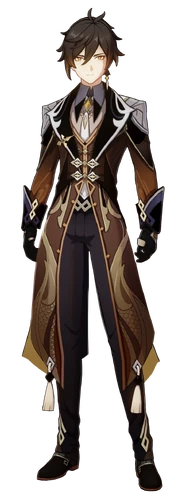

jusqu'à 6 coups de lance consécutifs.
À propos de lui
Zhongli (chinois : 钟离 Zhōnglí) est un personnage géo jouable dans Genshin Impact.
Il apparaît pour la première fois dans la Quête d'Archons: Chapitre I - Acte I, Adieu à l'Exuvia. Il dévoile plus tard être l'enveloppe charnelle de l'Archon Géo, Morax, qui a décidé d'expérimenter le monde du point de vue d'un mortel. Après avoir renoncé à son Gnosis, il démissionne de son poste d'Archon et revient à son ancienne identité d'Adepte, bien que toujours sous couverture humaine. Il travaille actuellement en tant que consultant au Funérarium Wangsheng.
Introduction
“ Consultant mystérieux invité par le Funérarium Wangsheng, ce beau jeune homme aux manières élégantes possède des connaissances qui vont bien au-delà de celles des gens ordinaires. Bien que personne ne sache d'où il est originaire, Zhongli est coutumier de l'étiquette et des règles de la bienséance. Maîtrisant les traditions de Liyue bien mieux que n'importe quel érudit, il effectue toutes sortes de cérémonies pour le compte du Funérarium Wangsheng. Tant qu'il a accès aux vêtements et aux décorations adéquats, au moment propice, aux emplacements appropriés et aux règles de la cérémonie, tout se déroulera sans la moindre anicroche.
Pourtant, cet homme aux paroles si exquises a l'habitude de sortir les poches vides. Les moras sont essentiels dans ce monde, que ce soit pour se nourrir ou se déplacer, mais Zhongli n'en transporte jamais. En fin de compte, il y aura toujours quelqu'un d'autre pour payer. Zhongli apprécie les spectacles les populaires et les chants les plus mélodieux, sans parler des mets et des vêtements qui comptent parmi les plus raffinés. Cependant, payer pour ces choses ne lui vient jamais à l'esprit. Ses proches se sont depuis longtemps habitués à son étrangeté, et ne s'en offusquent plus. Si vous lui en faites la remarque, il répondra simplement : « Est-ce ainsi ? Depuis toutes ces années, personne ne me l'a jamais reproché. » Échanger ses moras contre des denrées est depuis longtemps une règle de ce monde. Comment quelqu'un vivant de nos jours pourrait-il ne pas saisir cette vérité universelle ? Se pourrait-il que le temps lui ait fait oublier les futilités du commun des mortels ? Ou aspire-t-il uniquement à une vie insouciante, parcourant ce monde comme s'il se promenait dans les nuages ?
« Les années et siècles passant, il a rencontré d'innombrables personnes, et a croisé une quantité incalculable de gens. Comme le dit le dicton : l'eau qui coule peut dévier, mais la roche reste immobile. » - Ainsi fut les paroles qu'eut la Shogun Raiden avec Yae, le Guuji, à propos des affaires passées des pays voisins. ”
— Description du Site Officiel et de la Page Facebook
L'une des caractéristiques les plus déterminantes de Zhongli est sa tendance à oublier ses Moras lors des transactions, acceptant d'en dépenser de grosses sommes sans en avoir sous la main et même de croire à des réductions malgré le fait qu'il s'agisse d'une arnaque évidente. Il finit souvent par s'appuyer sur ceux qu'il connaît pour un soutien financier, comme le Funérarium Wangsheng ou Childe. Bien qu'il soit ami avec Hu Tao, qui lui fait le plus confiance, il n'aime pas son comportement enfantin. Pourtant, il n'hésite pas à lui envoyer la facture de ses excursions coûteuses, qu'elle semble payer en échange de sa tolérance envers ses farces.
Il est révélé plus tard que l'insouciance de Zhongli provient de son passé d'Archon Géo et de créateur de Mora. Avec le Gnosis lui permettant de créer des Moras de manière illimitée, il n'a jamais eu à s'inquiéter de ses finances personnelles. Malheureusement, lorsqu'il a choisi de vivre parmi les mortels, il n'a pas eu la prévoyance de trouver une alternative pour qu'ils continuent à fabriquer des Moras en son absence, tout en se créant un fond de retraite. Du coup, il dépense sans vergogne les Moras des autres, puisqu'il sait qu'il en est le créateur initial.
Zhongli, comme Venti, compare distinctement sa forme humaine de sa forme divine. Cependant, contrairement à lui, qui est prêt à révéler sa véritable identité pour aider son peuple quelle que soit la situation, Zhongli ne le ferait que si Liyue était en réel danger. Avant de simuler sa mort, il a laissé des indices aux Sept Etoiles et aux Adeptes sur le fait qu'il soit toujours en vie, mais n'a pas révélé l'identité de sa forme humaine.
Le set d'artéfacts Roche Ancienne indique que Rex Lapis était considéré comme un dieu sans émotion et sans pitié qui a massacré d'innombrables autres dieux pendant la Guerre des Archons, ce qui était apparemment nécessaire pour l'élaboration d'un contrat. En tant que dieu des contrats, Zhongli les prends avec sérieux et sincérité, bien qu'il ne se soucie pas des petites arnaques et manipulations dans les coulisses, il honorera toujours les accords convenus et est perplexe quand à la façon dont certaines personnes sont incapables de se conformer à un tel concept. De même, il ne tolère pas ceux qui rompent les contrats et déclare que tous ceux qui le font subiront la "Punition de la Roche". Fidèle à cela, son déchaînement élémentaire lui fait envoyer un météore vers ses ennemis.
Zhongli se soucie profondément de sa nation, même s'il risque de la mettre en danger en raison de sa démission du statut d'Archon Géo. Son intention était de tester Liyue pour voir s'ils étaient prêts à entrer dans une nouvelle ère sans sa présence, et il le fait en simulant sa mort pendant le Rituel de la Descente. Il précise plus tars, cependant, que si Liyue se retrouvait en réel danger, il interviendrait immédiatement. Il est d'accord avec l'opinion controversé de Keqing selon laquelle Liyue dépend trop de son Archon et la respecte pour ça. Très intelligent et calculateur, Zhongli prédit avec précision les plans de Childe et il construit son test pour Liyue entièrement autour de lui. Bien qu'il se soit servi de lui, il est toujours en bon terme avec l'Exécuteur, sortant parfois boire un verre avec lui. Liyue, tout en ignorant son identité, le respecte énormément, à la fois pour ses abondantes connaissances et pour son immense générosité. Il considère que la durée de vie humaine est incroyablement courte par rapport à la vie de Adeptes, il n'hésite donc pas à donner à son peuple tout ce dont il a besoin pour être le plus à l'aise, même si cela signifier leur donner des Moras de poche.
Il n'aime pas les fruits de mer, déclarant qu'ils lui rappellent de mauvais souvenirs - en référence à une époque où il combattait des monstres marins tentaculaires et nauséabondes avec beaucoup de difficultés en raison de leur résilience, de leur petite taille et de leur abondance, pour son bien, le peuple et la promesse qu'il leur a faîte, même si ce n'était rien de plus qu'une lutte antiparasitaire. Malgré son aversion pour les fruits de mer, cela n'a aucun rapport avec leur goût, cela ne le dérange pas de les manger quand ils sont devenus complètement méconnaissables de leur état d'origine.
| Zhongli | |
|---|---|
| Vago Mundo | |
|
Carte
Voeux
En jeux
|
|
|



|
|
| Qualité |
Arme Arme d'hast |
| Gnosis Geo |
Model 3D Homme Grand |
|
Bio
Doubleur
|
|
| Anniversaire : 31 Décembre |
|
| Constelation : Lapis Dei |
|
| Region : Liyue |
|
| Affiliations : | |
|
Plat Spécial : Soupe mijotée au bambou |
|
|
Nom de carte : Zhongli:Planet Befall |
|
|
Comment L'obtenir : Voeux evenement - Monts et marchés |
|
|
Premiere sortie : 1er Décembre 2020 |
|
| Anglais :Keith Silverstein | |
| Chinois :Peng Bo (彭博) | |
| Japonais :Maeno Tomoaki (前野智昭) | |
| Coréen :Pyo Yeong-jae (표영재) | |
| Icone | Nom | Type |
|---|---|---|
| Pluie de pierre | Attaque normale | |
|
Attaque normale :
Attaque chargée :
Consomme une certaine quantité d'endurance pour se précipiter en avant, faisant tomber des lances de pierre sur son chemin.
Attaque plongeante :
Plonge depuis les airs pour frapper le sol en contrebas, endommageant les adversaires le long du chemin et infligeant des DMG AoE à l'impact. |
||
| Dominus Lapidis | Compétence élémentaire | |
|
Chaque montagne, rocher et pouce de terre est rempli du pouvoir de Geo, mais ceux qui peuvent exercer librement de tels pouvoirs sont rares.
Presse :
Commande le pouvoir de la terre pour créer une stèle de pierre.
Maintenir :
Fait exploser l'énergie géo à proximité, provoquant les effets suivants :
Stèle en pierre :
Une fois créé, inflige AoE Geo DMG. |
||
| Chute de météore | Déchainement Elémentaire | |
|
Ramène un météore tombant sur terre, infligeant d'énormes dégâts géo aux adversaires pris dans son AoE et leur appliquant le statut Pétrification.
Pétrification:
Les adversaires affectés par le statut Pétrification ne peuvent pas bouger. |
||